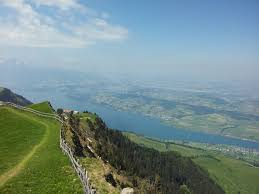
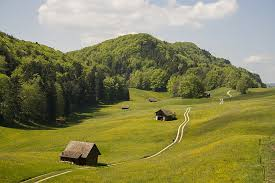
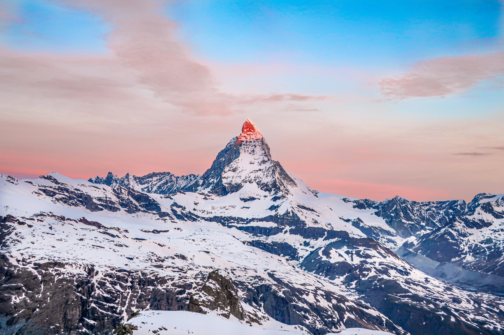
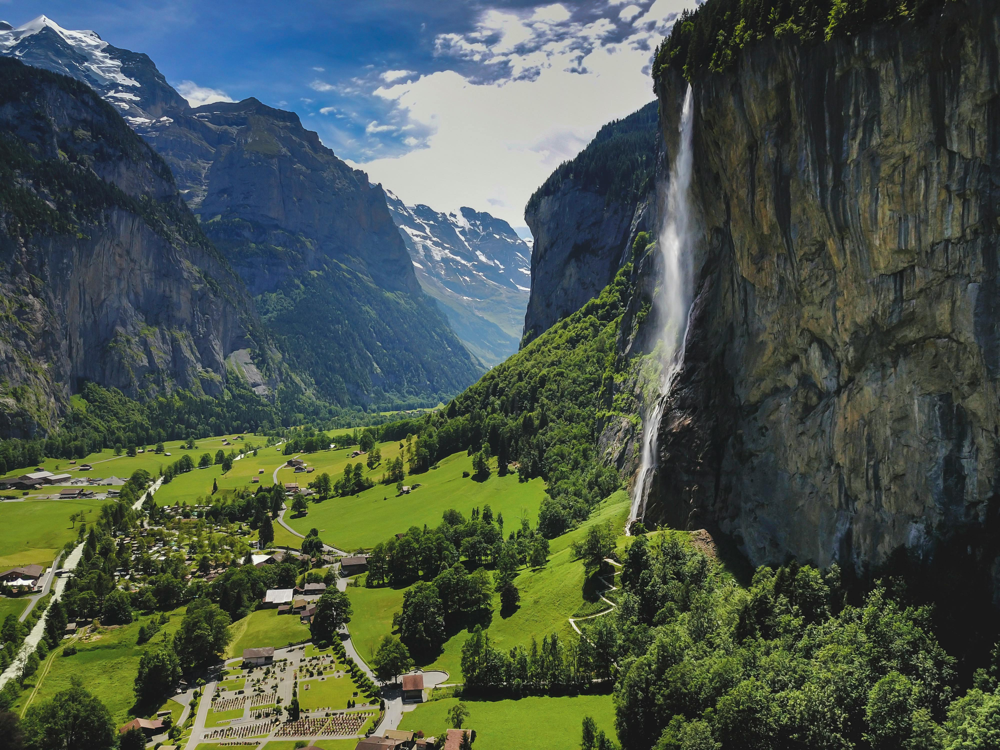
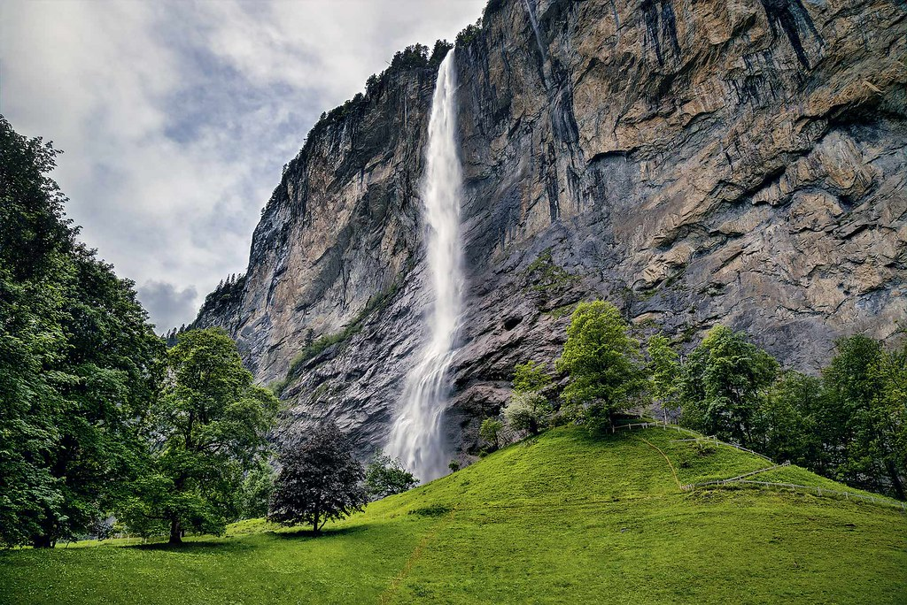

Switzerland Map
Regions

The Alps
Covering about two-thirds of the country, this is a region of high mountains with a smaller population.

The Central Plateau (Mittelland)
Located between the Alps and the Jura, this is the most populated region and the economic hub of the country.

The Jura
A mountainous range in the northwest with a distinct geological structure
Natural Landmarks

Matterhorn
A pyramidal peak and one of the most iconic mountains in the world, located near Zermatt.
Reference


Lauterbrunnen Valley
A glacial valley with 72 waterfalls spilling over its high cliffs.
Reference

Staubbach Falls
One of many waterfalls in the Lauterbrunnen Valley, known for its free-falling water.
Reference